Scaling of run "time" with dimension
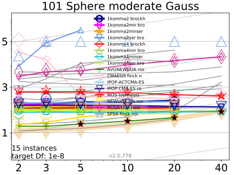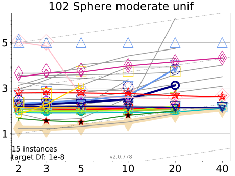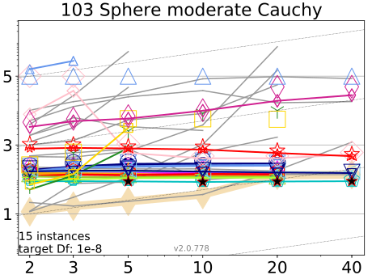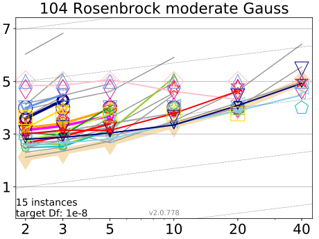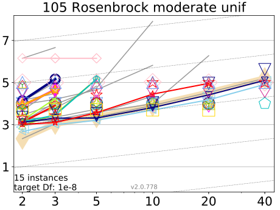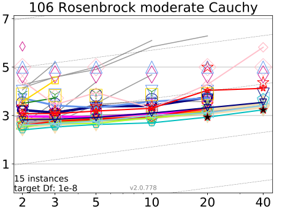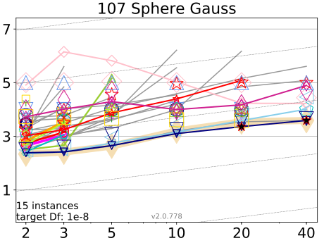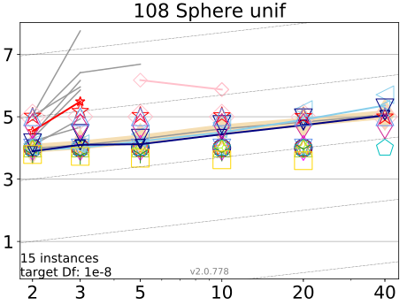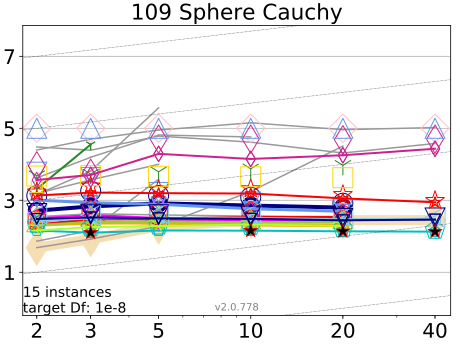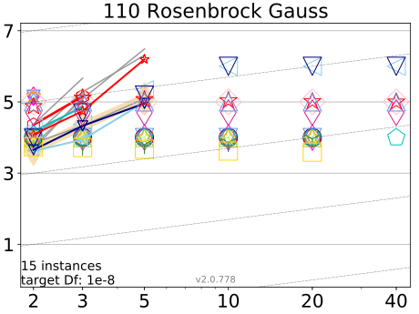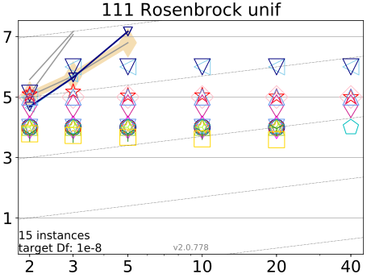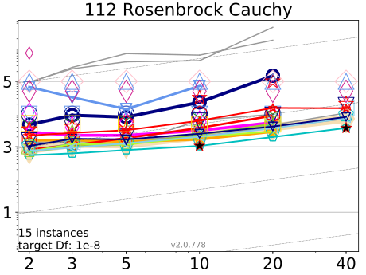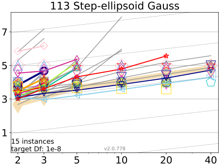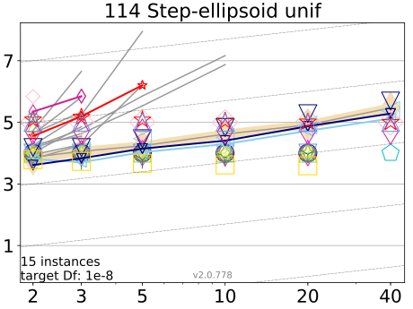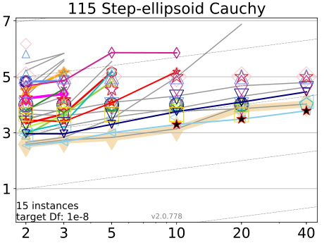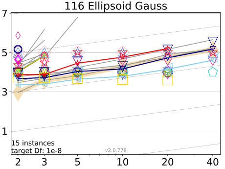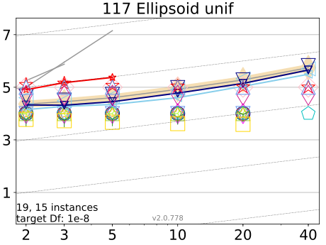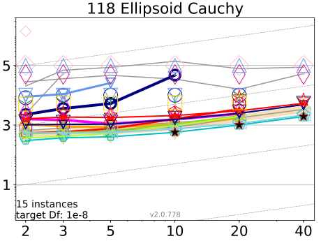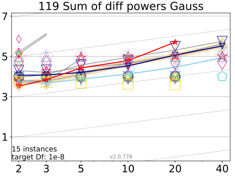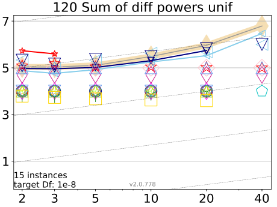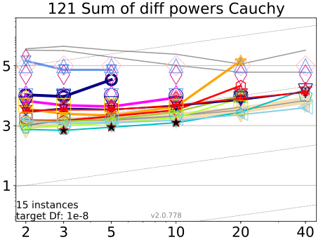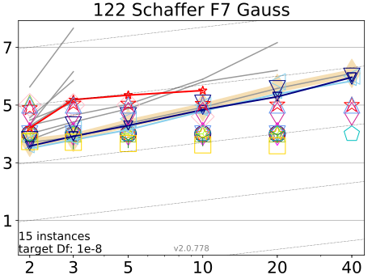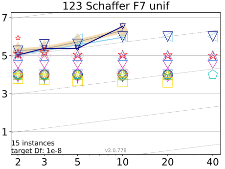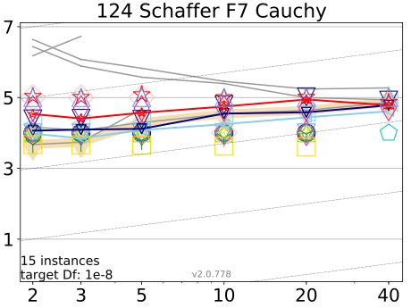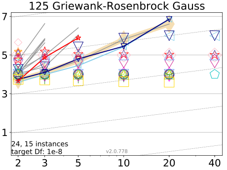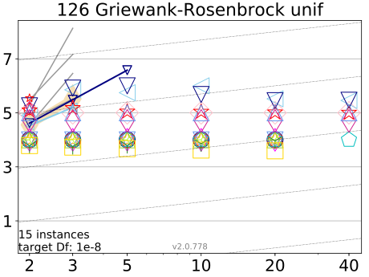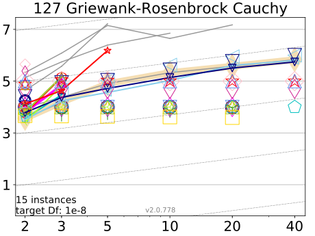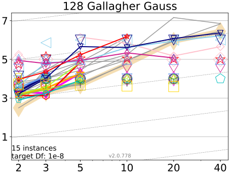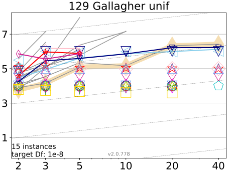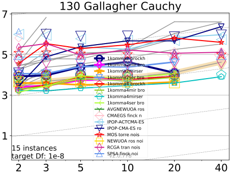
Average running time (aRT in number of f−evaluations as log10 value), divided by dimension for target function value 10^{−8} versus dimension. Slanted grid lines indicate quadratic scaling with the dimension. Different symbols correspond to different algorithms given in the legend of f1 and f24. Light symbols give the maximum number of function evaluations from the longest trial divided by dimension. Black stars indicate a statistically better result compared to all other algorithms with p < 0.01 and Bonferroni correction number of dimensions (six). Legend: ○: 1komma2 brockhoff noisy, ♢: 1komma2mir brockhoff noisy, ☆: 1komma2mirser brockhoff noisy, ▼: 1komma2ser brockhoff noisy, ⬡: 1komma4 brockhoff noisy, △: 1komma4mir brockhoff noisy, ⬠: 1komma4mirser brockhoff noisy, rightY: 1komma4ser brockhoff noisy, downY: AVGNEWUOA ros noisy, ◇: CMAEGS finck noisy, ◁: IPOP-ACTCMA-ES ros noisy, ▼: IPOP-CMA-ES ros noisy, ☆: MOS torre noisy, ◻: NEWUOA ros noisy, ♢: RCGA tran noisy, △: SPSA finck noisy